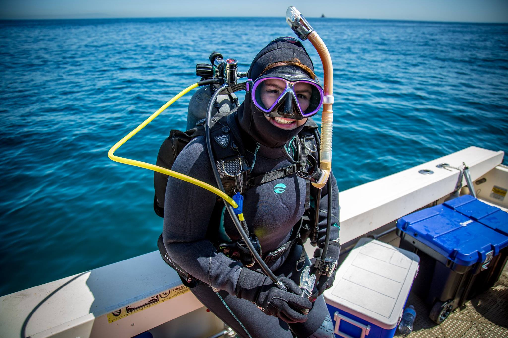
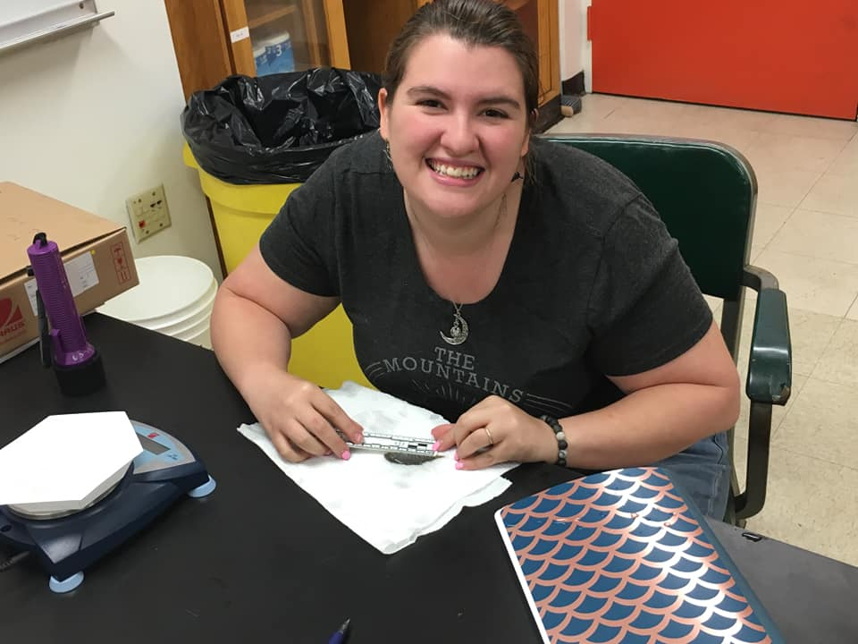
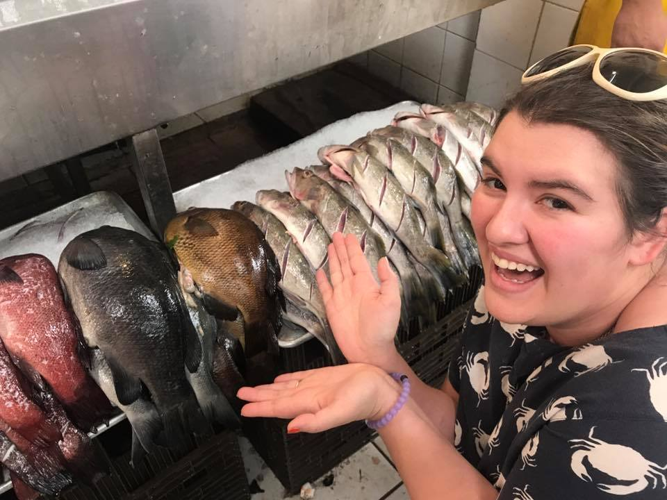
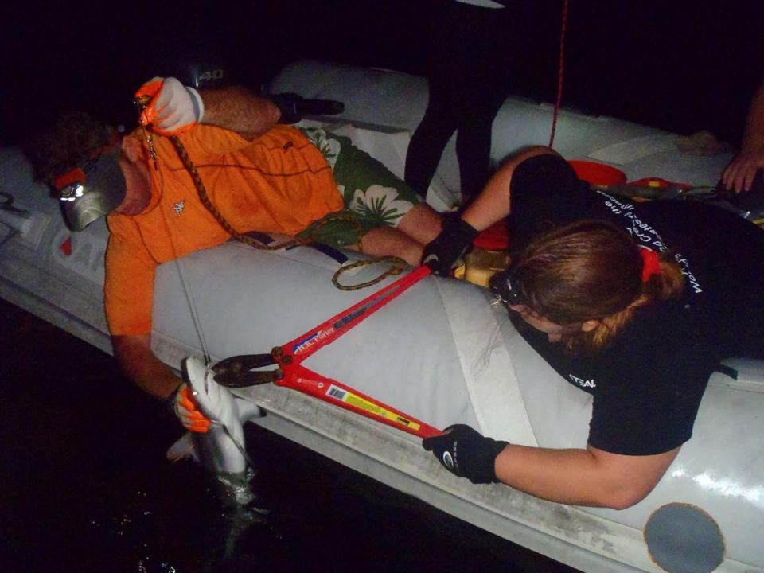

Research
My projects are geared toward understanding behavioral diversity in reef fish. Through the use of photography and videography I am able to capture natural behaviors and can examine how ecological context contributes to behavioral adaptation and plasticity. I also have a new focus on the roll of functional morphology in behavioral diversity.
I recently completed my masters thesis, with Dr. Darren Johnson at California State University, Long Beach. Here I studied local adaptation in behavior in response to moderate spatial differences in spearfishing pressure. This project involved over 100 hours of diving to collect pregnant black surfperch. Their offspring were born in the lab in a classic common garden design. This allowed me to evaluate inherited behavioral differences among offspring from different populations. The success of this project was particularly exciting as it is typically very difficult to measure local adaptation in marine fish given high gene flow and the challenges of acheiving offspring birth in lab environments. Surfperch are livebearers with high site fidelity and were the perfect candidate for addressing local adaptation in behavior. We found strong differences in how reactive offspring were to risk and that behaviors were correlated with spearfishing risk at their source population. This paper was published in Oecologia: read it here!
The precurser to my masters thesis was a project conducted by the entire Johnson Lab. We had observed a high degree of demographic variation among populations of black surfperch. Otolith measurements were used to generate a dataset with the age distributions and growth rates for populations of black surfperch spanning the coast of California. We measured population density, predator abundance, and prey availability as potential predictors of spatial variation in demography. However, none of these variables were related to age structure or growth rates. Then we begun to consider fishing impact. I was able to use social media platforms to scrape data on the degree of spearfishing effort at each population. We found a strong relationship between spearfishing pressure and demographic rates. This paper was published in the Journal of Experimental Marine Biology and Ecology: read it here! This project has inspired my interest in developing socioeconomic research skills so that I can continue to utilize social data in my future studies.
My work with black surfperch began on Catalina Island off the coast of Los Angeles. While I was working with Dr. Mark Steele at California State University, Northridge. Here I measured courtship success and found a strong tendancy toward size assortative mating. I also looked at differences in trade-offs made between foraging and courtship effort for males and females over a range of sizes. The study demonstrated that young males allocate energy differently than older males or females. his paper was published in the Journal of Fish Biology: read it here!
In addition to my larger projects I have a special place in my heart for elasmobranchs and have had the pleasure of participating in a lot of really fun and exciting field work trips. I spent the summer of 2014 in Hawaii long-lining and tagging shark pups with The university of Hawaii, sharks and rays ecology course. I also do a lot of volunteer scientific diving and for the last few years have been diving with the California State University, Long Beach Shark Lab. These dives are a blast, we clean and exchange data loggers and bouys which are constantly receiving transmissions from tagged white sharks. Unfortunately, I have only encountered one shark on the many many dives I've done with this great team... and.. truth be told, it wasn't even a white shark.